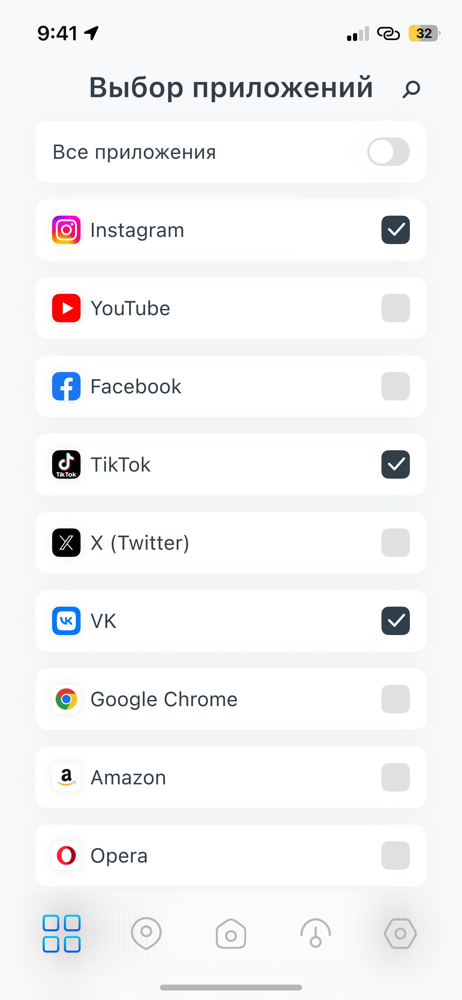

Every VPN Client promo frame is built as five parallel planes, not as one flat composition. The gradient stays at the back, the tilted white slab and the copy sit in the middle, the device sits in front of them — and one feature is lifted out of the device onto a fifth plane that overhangs the device silhouette and, when useful, the frame edge itself. That last plane is the whole point of the layout: it is where the thing you want the store visitor to notice goes.

One idea, one to three items. A fourth card turns the accent back into a list. In the file it is always exactly three: three feature pills, three apps, three servers.
It must cross a silhouette. The lifted element overlaps the device body (and often the frame edge) so the eye reads two distinct depths. An element floating in empty gradient is not on the front plane, it is just a card.
Reuse the real component, one step larger. The pulled-out row is the same App-Item / Server-Item that exists inside the app, scaled up so its label survives a store thumbnail — 61.3px title on a 1290px canvas.
Shadow says which plane you are on. --ad-shadow-front on white ground, --ad-shadow-front-strong on saturated gradient, --ad-shadow-device for the device itself. Same shadow on two planes collapses the depth.
Copy is never overlapped. The front plane lives below the headline block. The headline keeps its 50px margin and its own plane.
Tilt is a constant, not a decision. Slabs −5° (--ad-tilt-wedge), devices +15° (--ad-tilt-device) or upright. The front plane is always axis-aligned — it is the one thing that must not fight legibility.
Desktop works the same way. The app window is lifted off the Macbook screen instead of being composited into it: two clean zones — hardware, and the interface you are selling — instead of one small screenshot inside a bezel.